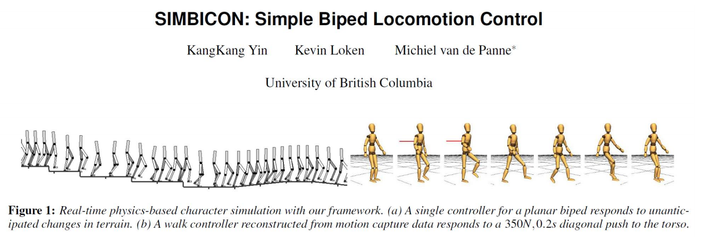
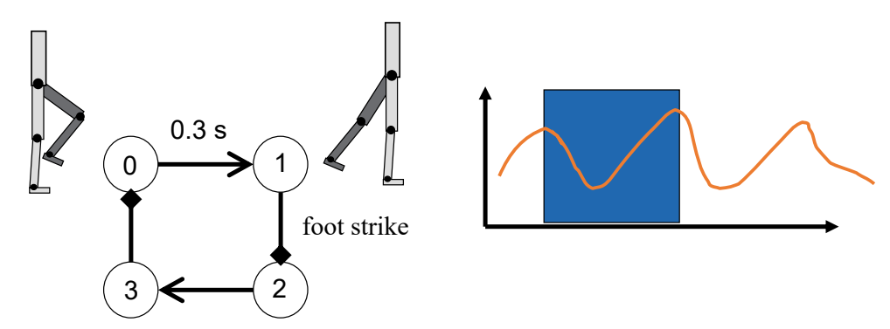
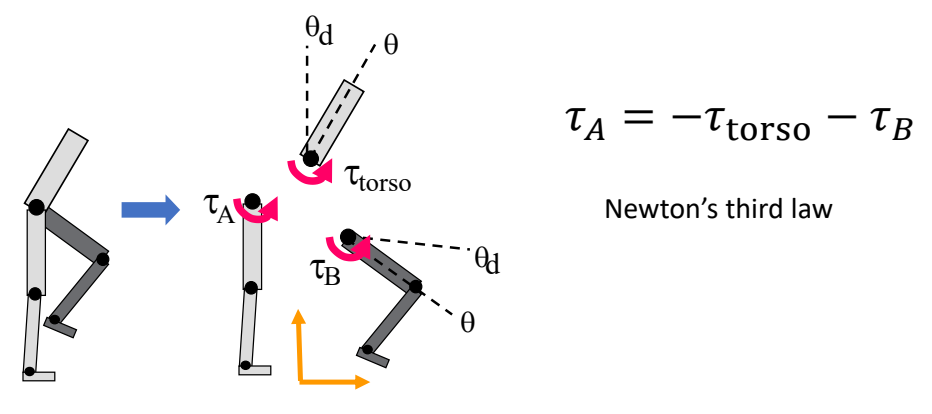
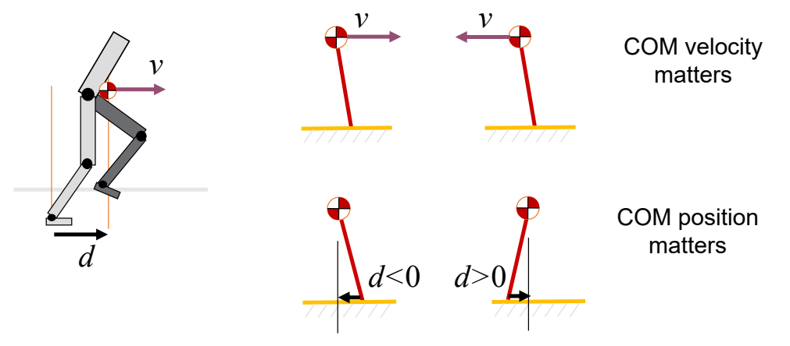
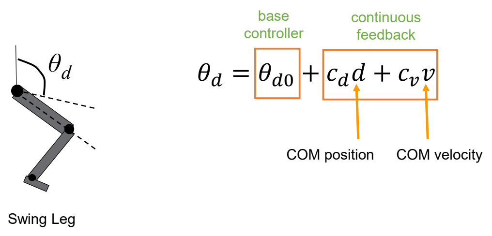
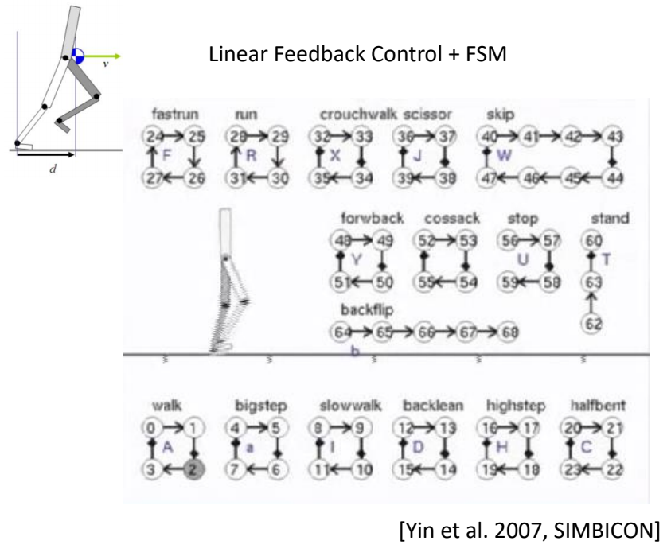

P48
SIMBICON
🔎 SIMBICON (SIMple BIped Locomotion CONtrol) Yin et al. 2007

✅ 经典工作，第一个实现了鲁棒的步态控制。
✅ 原理：跟踪控制器上加一个反馈
P49
Step 1
- Step 1: develop a cyclical base motion
- PD controllers track target angles
- FSM (Finite State Machine) or mocap
✅ 本质上是一个跟踪控制器，用状态机来实现的跟踪控制器

✅ 有四个状态，通过跟踪在4个状态之间切换，也可以用动捕数据来代替
P50
Step 2
- Step 2:
- control torso and swing-hip wrt world frame

✅ 控制目标：上半身保持竖直。
✅ 控制方法：
通过保持上半身竖直，计算出\(\tau _{\text{torso}} \)。
通过使B跟踪目标动作，计算出\(\tau _{B} \)。
通过 \(\tau _{\text{torso}} \) 和 \(\tau _{B} \) 控制 \(\tau _{A} \).
P51
Step 3
- Step 3: COM feedback

✅ 估计下一个脚步的位置d，使质心处于可控范围内。
✅ \(d\) 与 \(D\) 有关，但关系复杂，在此处做了简化。
P52

✅ 简化问题：\(d\) 和 \(v\) 与 \(\theta _d\) 的速度是线性关系。速度会转化为 PD 目标的修正。
✅ 线性的系数为手调。
P53
SIMBICON

P54
Outline
- How to generalize to other motion?

本文出自CaterpillarStudyGroup，转载请注明出处。
https://caterpillarstudygroup.github.io/GAMES105_mdbook/